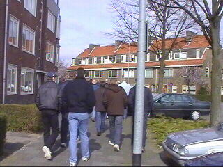

|
FC Groningen - Roda JC (0-2) 24 maart 2002 |
Bij een AC restaurant ter hoogte van Apeldoorn
ontmoetten enkele blij-in-eigen-blik reizigers de
Bakkerbuspassagiers Koot en Beavis.
De gemeente Groningen had het in het hoofd
gehaald om de Roda supporters slechts vanaf een
parkeerplaats aan de rand van de stad tot aan het
stadion te begeleiden. Hier marcheren de mensen
van de FP-bus.

Begeleid door een politiebusje en achtervolgd
door een groep Groningensupporters werd er
naar het Oosterparkstadion gewandeld.
Leo is creatief geweest met zijn joystick.
Een minuut stilte voor een medewerker van FCG
die overleed bij het busongeluk bij Metz.
Anastasiou trapt af. Het was een van zijn laatste
acties want enkele minuten later verstapte hij zich
waarbij een enkelband afscheurde. Einde seizoen!
De Soetaers-girls. Hun idool verprutste vanmiddag
drie prima kansen.
Lachambre, hier in een pittig duel verwikkeld,
ging steeds beter spelen.
Lawal heeft Berglund gelanceerd. Deze passeert
op bekeken wijze doelman Beukenkamp (80).
De gloed van kasTANjerood haar in de lentezon.
Tchoutang vindt Berglund en stelt deze in staat
nummer twee in te schuiven: 0-2 (88).
Drie zeer kostbare punten gaan mee naar huis!
Garba Lawal organiseert ons favoriete muurtje.
Tchoutang laat zijn T-shirt zien met foto-prints.
Het Oosterparkstadion stroomde weer zeer snel
leeg. Roda ligt FCG blijkbaar niet.
Graffity van Tweety.
Omdat de bussen niet tot aan het sadion mochten
rijden en omdat er te weinig politie en teveel
dreiging van agressieve Groningers was mochten
we niet meteen het stadion uit. De supporters die
met eigen auto waren moesten via een zij-uitgang
naar buiten.
Op weg naar het centrum kwamen we de nieuwe
inkomstenbron van Jan van Dijk tegen.
©KPD